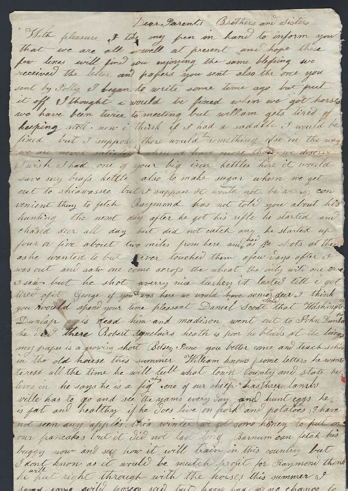

Everyday Explainers
So much of daily life runs on arrangements we never stop to think about. Here, in plain words, is how a few familiar things — time zones, the mail, leap years, the seasons, and money — came to be.

So much of the everyday world runs on arrangements we never stop to think about — the clocks, the calendars, the mail, the money. Each has a history and a logic, and understanding it is one of the quiet satisfactions of a curious mind. Here we explain, in plain words, how a few familiar things came to be.
Why we have time zones
For most of human history, every town kept its own time, set by the sun overhead; noon was simply when the sun was highest. This worked well enough when travel was slow, but the coming of the railroads changed everything. Trains moved fast enough that the patchwork of local times became a dangerous confusion, with every station keeping a slightly different clock and timetables nearly impossible to coordinate.
The solution, adopted in the late nineteenth century, was to divide the world into standard time zones, broad bands within which everyone keeps the same clock, each zone differing from its neighbors by a convenient hour. The system was tied to an agreed starting line, the prime meridian, from which all zones are measured. It was a triumph of practical cooperation, and it is why, when you travel east or west far enough, you must set your watch forward or back by whole hours. The next time you adjust your clock for a journey, you are taking part in a solution to a problem the railroads created.
How the postal system works
The ability to send a letter to almost anywhere, cheaply and reliably, is a marvel we rarely pause to admire. The modern postal system rests on a brilliantly simple idea, pioneered in the nineteenth century: the prepaid postage stamp. Before it, the person receiving a letter typically paid for its delivery, a slow and awkward arrangement. The stamp let the sender pay in advance at a single, standard rate, and the volume of mail exploded.
Behind the simple act of dropping a letter in a box lies an enormous, coordinated enterprise. Mail is collected, sorted — increasingly by machine, reading the address and the postal code — transported across the country by road, rail, and air, and delivered by carriers who walk or drive their routes day after day. International mail depends on cooperation among the postal services of nearly every nation, so that a stamp bought in one country sees a letter delivered in another. It is one of the oldest and most successful examples of the whole world working together.
The puzzle of leap years
Why does February gain an extra day every four years? The answer lies in a small astronomical inconvenience: the Earth does not take a tidy 365 days to circle the Sun, but very nearly 365 and a quarter. If our calendar ignored that extra quarter-day, it would slowly drift out of step with the seasons, until after many centuries the months no longer matched the weather at all.
The remedy is the leap year. By adding one extra day — the 29th of February — every four years, we roughly make up for those accumulated quarter-days and keep the calendar aligned with the Sun. The arrangement is slightly more intricate than that, because a quarter-day is not an exact figure; to fine-tune it, certain century years skip the leap day under a clever rule worked out long ago. The result is a calendar that stays remarkably true to the seasons across the ages. It is a small triumph of patient astronomy, hiding in plain sight on your kitchen wall.
Why we have seasons
Many people assume the seasons come from the Earth moving nearer to and farther from the Sun, but the real reason is more elegant. The Earth spins on an axis that is tilted, and it keeps that same tilt as it travels around the Sun. This means that for half the year one hemisphere leans toward the Sun, and for the other half it leans away.
When your half of the world is tilted toward the Sun, its rays strike more directly and the days grow long: this is summer. When it leans away, the rays arrive at a shallow angle and the days shorten: this is winter. Spring and autumn are the transitions between. It is why the seasons are opposite in the northern and southern hemispheres — when one leans toward the Sun, the other leans away. The whole grand cycle of the year, with all its changing light and weather, comes down to that steady, patient tilt of our spinning world.
How paper money came to be
A banknote is, on the face of it, a strange thing: a piece of printed paper worth far more than the paper itself. The idea took centuries to develop. In early times, trade relied on goods of real value — coins of gold and silver, or useful commodities. Carrying large sums was heavy and risky, and so, long ago, merchants and early banks began issuing paper receipts promising to pay the bearer a certain amount of precious metal held safely in their vaults.
Over time, people found it easier simply to trade the paper receipts themselves, and paper money was born. Eventually governments took over the issuing of currency, and the link to gold and silver was gradually loosened and then abandoned. Modern money has value not because it can be exchanged for metal, but because a whole society trusts and agrees that it does — it is backed by confidence and law rather than by treasure. That shared trust is the quiet foundation of every transaction you make, a remarkable and largely invisible achievement of human cooperation — a reminder that money, for all its power, is in the end a story we all agree to believe.
How a lighthouse guides ships
For as long as people have put to sea, they have needed a way to find the coast safely in the dark and in foul weather, and the lighthouse is the beautiful answer. At its heart is a simple idea: a strong light, raised high and shown far out to sea, warning sailors of a dangerous shore and guiding them to safe passage. But the engineering that makes it work is more clever than it first appears.
A lighthouse must be seen from many miles away, and a plain lamp, however bright, scatters its light in all directions and is quickly lost in the distance. The great advance was a special arrangement of lenses and prisms, developed in the nineteenth century, that gathers the lamp's scattered light and bends it into a powerful, concentrated beam. By rotating this lens, the lighthouse sends out a sweeping flash, and by giving each lighthouse its own rhythm of flashes, sailors can tell one from another and know exactly where they are. It is a marriage of physics and purpose, and few human inventions are at once so useful and so romantic.
Why clocks run clockwise
Here is a small mystery hiding on every wall: why do the hands of a clock turn in the particular direction we call "clockwise"? The answer reaches back to the sundial, the clock's ancient ancestor. In the northern hemisphere, where clocks were first made, the shadow cast by a sundial's pointer moves across the dial in exactly the direction our clock hands now follow, as the sun travels from east to south to west across the sky.
When the first mechanical clocks were built, their makers naturally copied the familiar motion of the sundial's shadow, so that the new machines would feel natural to people used to telling time by the sun. The direction stuck, and "clockwise" became a fixed part of our world, used now for everything from screws to steering wheels. Had clocks been invented in the southern hemisphere, where a sundial's shadow moves the other way, our whole notion of "clockwise" might well have been reversed. It is a charming reminder of how the accidents of history become the unquestioned habits of the present, and how much of what we take for granted was once simply someone's sensible choice.
The joy of understanding
There is a particular pleasure in finally understanding something you have used all your life without a second thought. Each of these everyday arrangements — the zones, the mail, the calendar, the seasons, the money — is the product of long human ingenuity, and knowing how it works makes the ordinary world a little more wonderful.
Curiosity about the everyday is curiosity at its best, for its rewards are all around you, every day, hiding in the most ordinary objects and habits of life. We hope these explanations have lit a small lamp of understanding, and that you will never again glance at a clock, a calendar, or a banknote without a flicker of recognition. When you would like to range wider again, the American History and World History shelves are full of longer stories, and the On This Day page has a note for the very date you are reading this. For the everyday world is, when you look closely, every bit as full of history and ingenuity as the grandest events of the past.